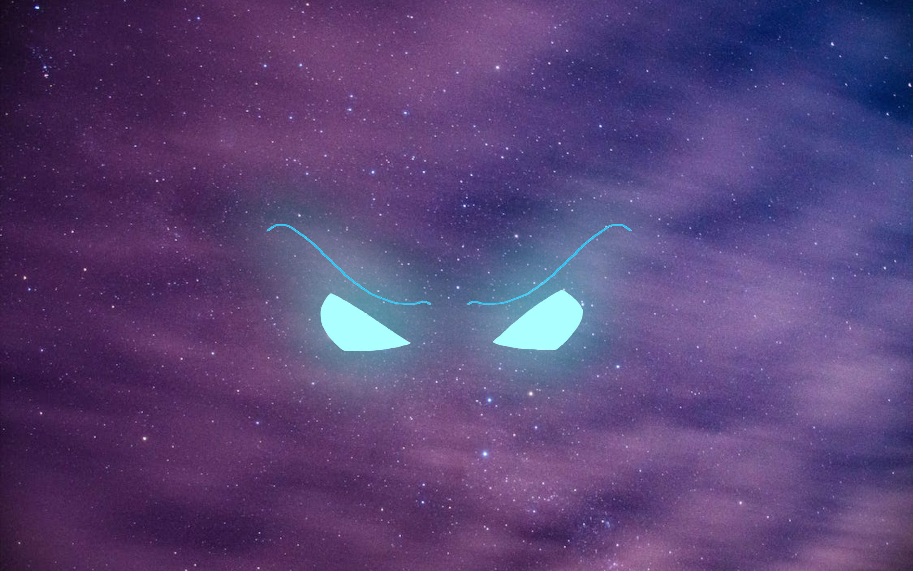
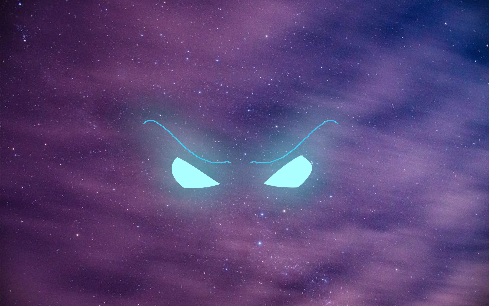

Screens of All Proportions
Movies have been around since the dawn of the 20th century, and many of them vary in quality and formats. Television, introduced several decades later, would follow a similar formula. Both of these serve as major forms of entertainment, and many strive to produce films and shows for others to enjoy.
For an example company with these capabilities, visit:
The Nickelodeon Animation website. 
